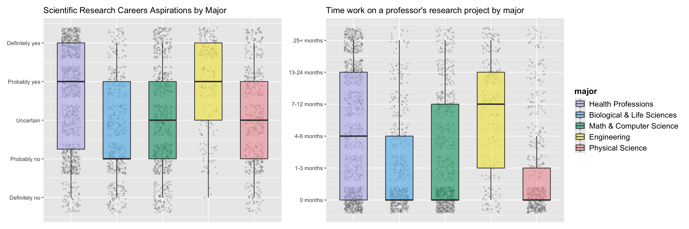
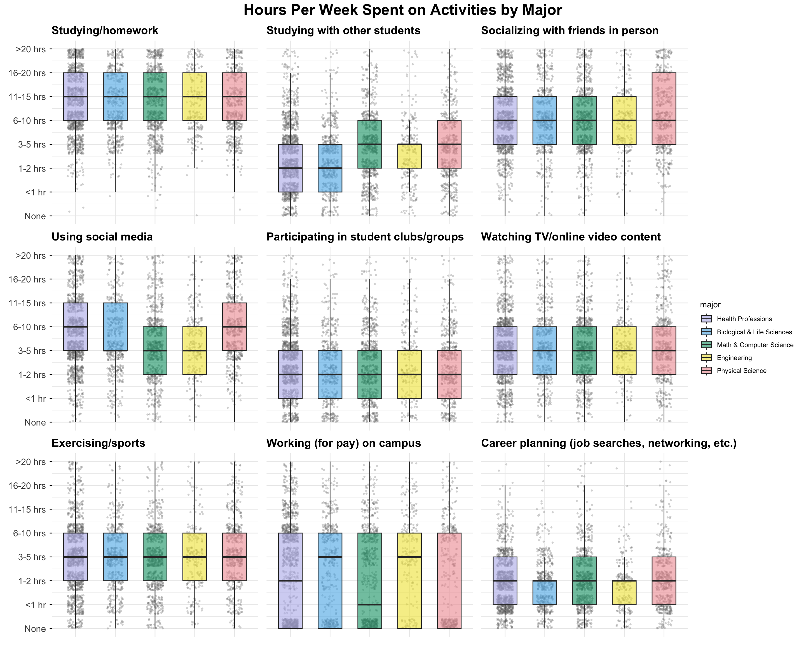
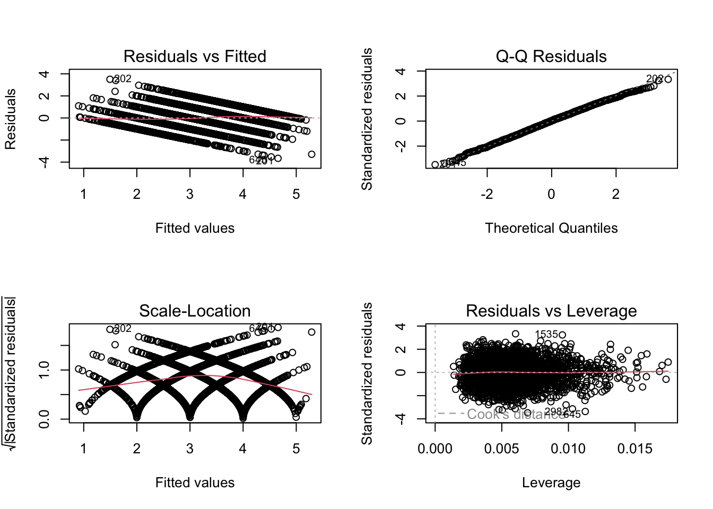
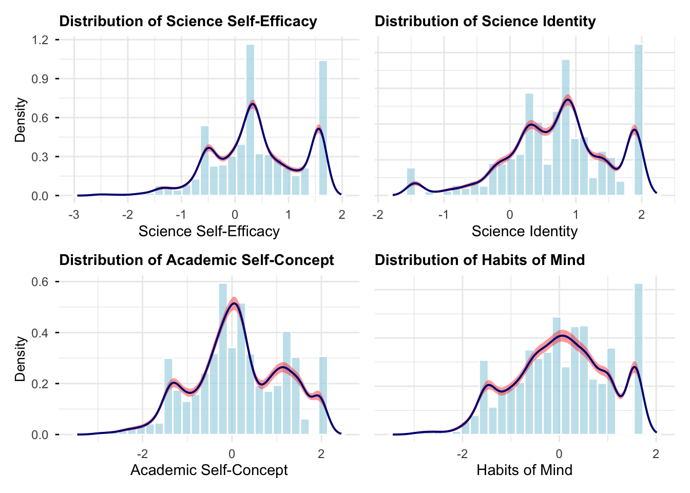
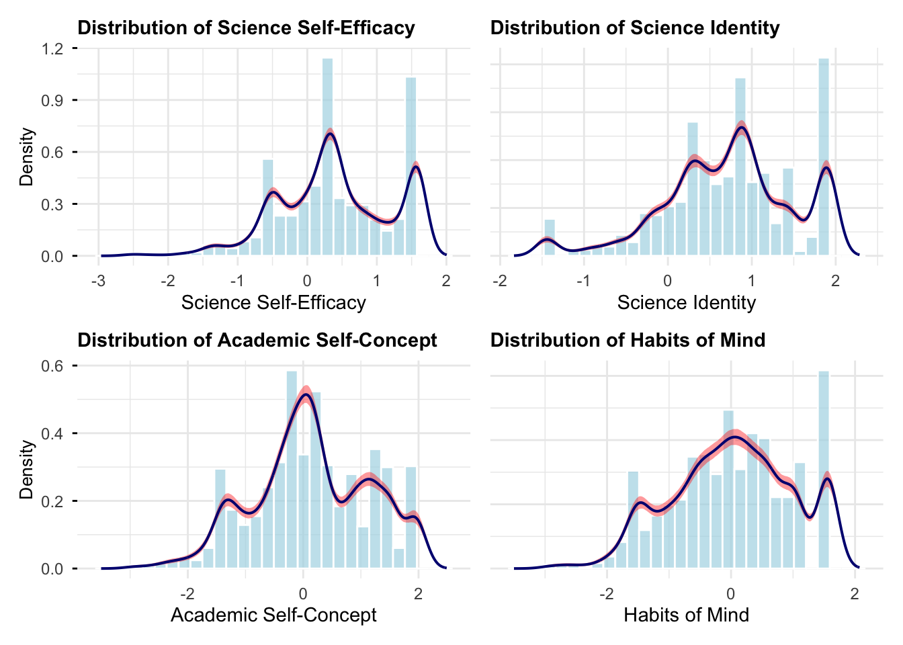
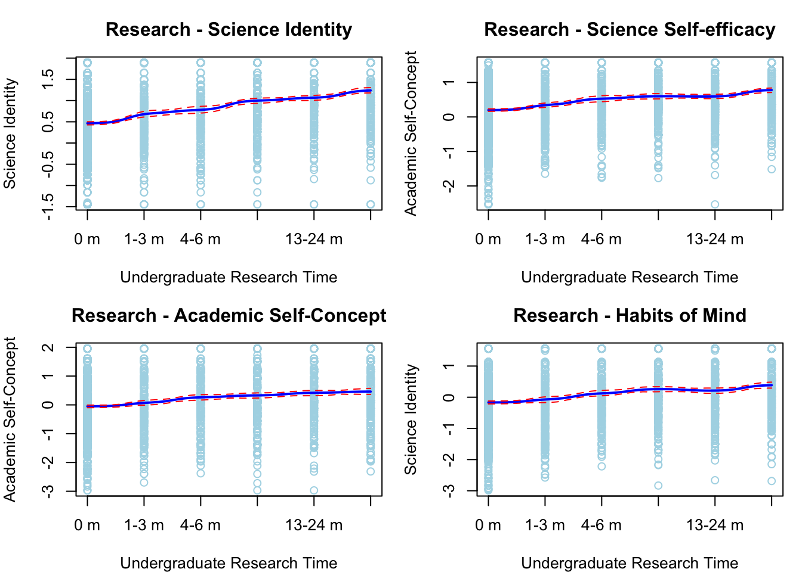
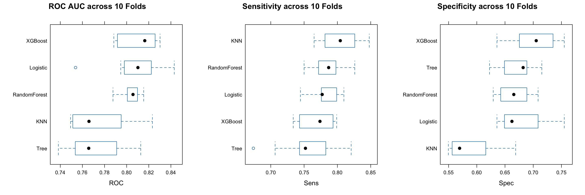
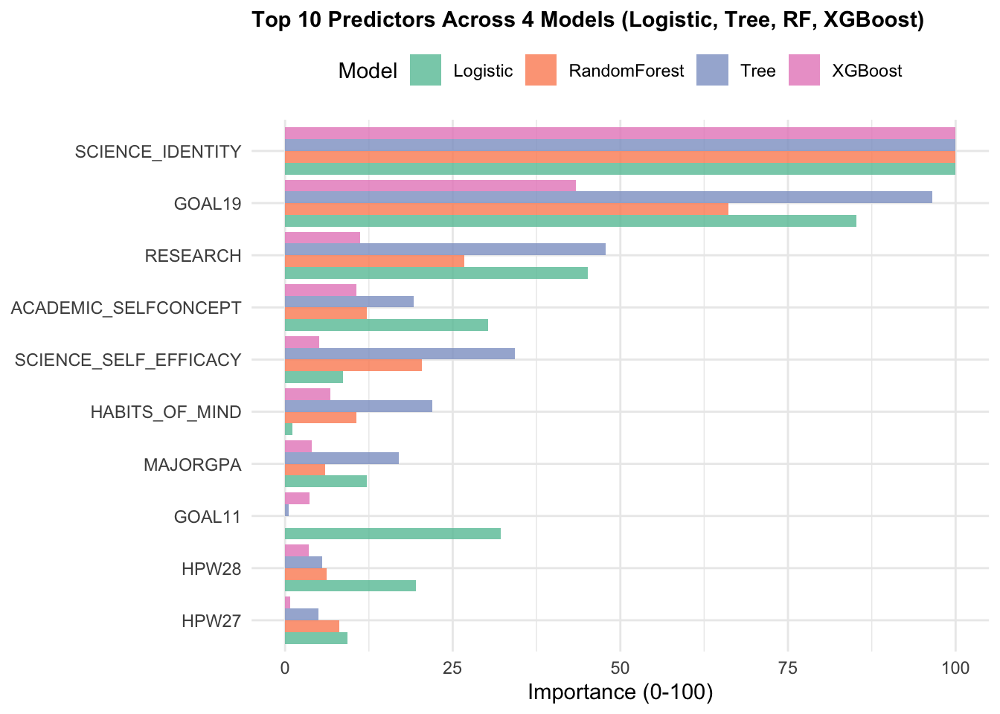

rm(list = ls())
library(tidyverse)
library(dplyr)
library(skimr)
library(haven)
library(table1)
library(mice)
library(ggplot2)
library(patchwork)
library(scales)
library(lattice)
library(gridExtra)This document presents the results and R analyses for the STATS 202A final project
0. Introduction
- limit the sample to STEM bachelor degree recipient
- missing values rate, mice
- outliers
Also prepare the variables lists here…
SCICAREER (outcome): Will you puruse a science-related research career? 5-point(1=Definitely no; 2=Probably no; 3=Uncertain; 4=Probably yes; 5=Definitely yes);binary (1 = Yes, 0 = otherwise)
Science identity (continous): A measure describing the extent to which students conceive of themselves as scientists.
Science self-efficacy (continuous): Measure of students’ confidence in their ability to conduct scientific research.
Academic self-concept (continous): A measure of students’ beliefs about their abilities and confidence in academic environments.
Habits of minds (continous): A measure of the behaviors and traits associated with academic success. These behaviors are seen as the foundation for lifelong learning.
MAJORGPA: 1=D; 2=C; 3=C+; 4=B-; 5=B; 6=B+; 7=A-; 8=A or A+
GOAL19: Goal: Making a theoretical contribution to science (1=Not Important; 2=Somewhat Important; 3=Very Important; 4=Essential)
GOAL11: Goal: Helping others who are in difficulty
GOAL04: Goal: Becoming an authority in my field
RESEARCH: How many months since entering college (including summer) did you work on a professor’s research project? (1=0 months; 2=1-3 months; 3=4-6 months; 4=7-12 months; 5=13-24 months; 6=25+ months)
HPW17: Hours per Week: Studying/homework. During the past year, how much time did you spend during a typical week: (1=None; 2=Less than 1 hour; 3=1-2; 4=3-5; 5=6-10; 6=11-15; 7=16-20; 8=Over 20)
HPW29: Hours per Week: Studying with other students
HPW28: Hours per Week: Socializing with friends in person
HPW09: Hours per Week: Using social media
HPW04: Hours per Week: Participating in student clubs/groups
HPW24: Hours per Week: Watching TV/online video content (e.g., Amazon, Hulu, Netflix, YouTube)
HPW06: Hours per Week: Exercising/sports
HPW27: Hours per Week: Working (for pay) on campus
HPW02:Hours per Week: Career planning (job searches, networking, etc.)
Methods
descriptive analysis, cross-tabulations, raw data (with jitter) overlaid with Box
Linear regression, model diagnosis
Univariate Kernel Density Estimation
Kernel Regression Estimation
Prediction Model
load the data
data <- read_sav("/Users/aishuhan/Desktop/CCW and Undergraduate WOC STEM Career/CSS2019.SAV")
dim(data)[1] 11776 677dt <- data %>%
select(MAJOR1, STUID, SCICAREER,
SCIENCE_SELF_EFFICACY, SCIENCE_IDENTITY, ACADEMIC_SELFCONCEPT, HABITS_OF_MIND,
MAJORGPA, GOAL19, GOAL11, GOAL04, RESEARCH,
HPW17, HPW29, HPW28, HPW09, HPW04, HPW24, HPW06, HPW27, HPW02)
head(dt)# A tibble: 6 × 21
MAJOR1 STUID SCICAREER SCIENCE_SELF_EFFICACY SCIENCE_IDENTITY
<dbl+lbl> <chr> <dbl+lbl> <dbl> <dbl>
1 1 [Art, fine and app… 9892… 3 [Uncer… 65.0 48.6
2 114 [Biochemistry/Biop… 9892… 3 [Uncer… 46.8 55.2
3 3 [English (language… 9892… 1 [Defin… 39.7 33.4
4 4 [History] 9891… 1 [Defin… 42.8 43.6
5 7 [Music] 9892… 2 [Proba… 48.6 43.3
6 11 [Other Arts and Hu… 9892… 4 [Proba… 51.2 52.5
# ℹ 16 more variables: ACADEMIC_SELFCONCEPT <dbl>, HABITS_OF_MIND <dbl>,
# MAJORGPA <dbl+lbl>, GOAL19 <dbl+lbl>, GOAL11 <dbl+lbl>, GOAL04 <dbl+lbl>,
# RESEARCH <dbl+lbl>, HPW17 <dbl+lbl>, HPW29 <dbl+lbl>, HPW28 <dbl+lbl>,
# HPW09 <dbl+lbl>, HPW04 <dbl+lbl>, HPW24 <dbl+lbl>, HPW06 <dbl+lbl>,
# HPW27 <dbl+lbl>, HPW02 <dbl+lbl>#str(dt)
dt <- dt %>%
mutate(
major = case_when(
MAJOR1 %in% c(112, 113, 114, 115, 116, 117, 118, 119, 120, 121, 122, 123) ~ 1, # Bio & Life Sci
MAJOR1 %in% c(663, 664, 665) ~ 2, # Math & CS
MAJOR1 %in% c(442, 443, 444, 445, 446, 447, 448, 449, 450, 451, 452, 453, 454) ~ 3, # Engineering
MAJOR1 %in% c(766, 767, 768, 769, 770, 771, 772) ~ 4, # Physical Sci
MAJOR1 %in% c(555, 556, 557, 558, 559, 560, 561, 562) ~ 5, # Health Professions
!is.na(MAJOR1) ~ 0, # Non-STEM: any valid MAJOR1 value not in the above categories
TRUE ~ NA_real_
),
major = factor(major,
levels = c(0, 1, 2, 3, 4, 5),
labels = c("non-STEM",
"Health Professions",
"Biological & Life Sciences",
"Math & Computer Science",
"Engineering",
"Physical Science")))
dim(dt) [1] 11776 22check missingness and outliers
The missing rate is less than 1.6%, the Little’s MCAR test is non significant, suggesting the missingness appears random and not systematically related to observed values. So I used the likewise deletion here.
For the outcome variables, since it’s a continues variables, I standardized them removed those cases have |z|>3.0. Removed 22 outliers.
For those ordinal variables using 3/4/5 points Likert responses, so I don’t remove or Winsorize anything.
#filter students who have non-missing outcome variable
dt <- dt %>% filter(!is.na(MAJOR1), !is.na(SCICAREER))
dt %>% summarise(across(everything(), ~ mean(is.na(.)))) # A tibble: 1 × 22
MAJOR1 STUID SCICAREER SCIENCE_SELF_EFFICACY SCIENCE_IDENTITY
<dbl> <dbl> <dbl> <dbl> <dbl>
1 0 0 0 0.0190 0.0163
# ℹ 17 more variables: ACADEMIC_SELFCONCEPT <dbl>, HABITS_OF_MIND <dbl>,
# MAJORGPA <dbl>, GOAL19 <dbl>, GOAL11 <dbl>, GOAL04 <dbl>, RESEARCH <dbl>,
# HPW17 <dbl>, HPW29 <dbl>, HPW28 <dbl>, HPW09 <dbl>, HPW04 <dbl>,
# HPW24 <dbl>, HPW06 <dbl>, HPW27 <dbl>, HPW02 <dbl>, major <dbl>#run Little's MCAR test
library(MissMech)
dt.c <- dt[, -c(1, 2, 3,22)]
#TestMCARNormality(dt.c)
#check outliers, remove cases with z-scores beyond ±3
dt <- dt %>%
mutate(SCIENCE_SELF_EFFICACY_z = scale(SCIENCE_SELF_EFFICACY)[,1],
SCIENCE_IDENTITY_z = scale(SCIENCE_IDENTITY)[,1],
ACADEMIC_SELFCONCEPT_z = scale(ACADEMIC_SELFCONCEPT)[,1],
HABITS_OF_MIND_z = scale(HABITS_OF_MIND)[,1])
#listwise deletion and filter the sample to only include STEM students
dt <- dt %>%
drop_na() %>%
filter(major != "non-STEM") %>%
filter(abs(SCIENCE_SELF_EFFICACY_z) <= 3.0 &
abs(SCIENCE_IDENTITY_z) <= 3.0 &
abs(ACADEMIC_SELFCONCEPT_z) <= 3.0 &
abs(HABITS_OF_MIND_z) <= 3.0)
#write.csv(dt, "dt_cleaned.csv", row.names = FALSE)1. Descriptive & Linear
sample
#skim(dt)
table1(~ factor(SCICAREER) + factor(major) + SCIENCE_SELF_EFFICACY + SCIENCE_IDENTITY +
ACADEMIC_SELFCONCEPT + HABITS_OF_MIND +
MAJORGPA + GOAL19 + GOAL11 + GOAL04 + RESEARCH +
HPW17 + HPW29 + HPW28 + HPW09 + HPW04 + HPW24 + HPW06 + HPW27 + HPW02, data = dt)box-plot
Box plot of science-related research aspirations/science self-efficacay/GOAL19/RESEARCH by major.
major_colors <- c("Health Professions" = "#B7B7EB","Biological & Life Sciences" = "#56B4E9",
"Math & Computer Science" = "#009E73","Engineering" = "#F0E442", "Physical Science" = "#F09BA0")
p0 <- ggplot(dt, aes(x = major, y = as.numeric(SCICAREER), fill = major)) +
geom_jitter(width = 0.2, alpha = 0.3, size = 1, color = "gray45", shape = 16) +
geom_boxplot(alpha = 0.6, outlier.shape = NA, width = 0.6) +
scale_fill_manual(values = major_colors) +
scale_y_continuous(breaks = 1:5,
labels = c("Definitely no", "Probably no", "Uncertain", "Probably yes", "Definitely yes")) +
labs(title = "Scientific Research Careers Aspirations by Major", y = NULL, x = NULL) +
theme(axis.text.x = element_blank(), axis.ticks.x = element_blank(), legend.position = "none")
p1 <- ggplot(dt, aes(x = major, y = as.numeric(SCIENCE_SELF_EFFICACY), fill = major)) +
geom_jitter(width = 0.2, alpha = 0.3, size = 1, color = "gray45", shape = 16) +
geom_boxplot(alpha = 0.6, outlier.shape = NA, width = 0.6) +
scale_fill_manual(values = major_colors) +
labs(title = "Science self-efficacy by major", y = NULL, x = NULL) +
theme(axis.text.x = element_blank(), axis.ticks.x = element_blank(), legend.position = "none")
p2 <- ggplot(dt, aes(x = major, y = as.numeric(GOAL19), fill = major)) +
geom_jitter(width = 0.2, alpha = 0.3, size = 1, color = "gray45", shape = 16) +
geom_boxplot(alpha = 0.6, outlier.shape = NA, width = 0.6) +
scale_fill_manual(values = major_colors) +
scale_y_continuous(breaks = 1:4,
labels = c("Not Important", "Somewhat Important", "Very Important", "Essential")) +
labs(title = "Make theoretical contribution to science by major", y = NULL, x = NULL) +
theme(axis.text.x = element_blank(), axis.ticks.x = element_blank(), legend.position = "none")
p3 <- ggplot(dt, aes(x = major, y = as.numeric(RESEARCH), fill = major)) +
geom_jitter(width = 0.2, alpha = 0.3, size = 1, color = "gray45", shape = 16) +
geom_boxplot(alpha = 0.6, outlier.shape = NA, width = 0.6) +
scale_fill_manual(values = major_colors) +
scale_y_continuous(breaks = 1:6,
labels = c("0 months", "1-3 months", "4-6 months", "7-12 months", "13-24 months", "25+ months")) +
labs(title = "Time work on a professor's research project by major", y = NULL, x = NULL) +
theme(axis.text.x = element_blank(),
axis.ticks.x = element_blank(),
legend.position = "right",
legend.title = element_text(face = "bold", size = 13),
legend.text = element_text(size = 12))
#combined_plot<- (p0 | p1) / (p2 | p3) + plot_layout(guides = "collect")
combined_plot<- (p0 | p3) + plot_layout(guides = "collect")
print(combined_plot)
#ggsave("p0.png", combined_plot, width = 15, height = 5, dpi = 300)hpw_vars <- c("HPW17", "HPW29", "HPW28", "HPW09", "HPW04",
"HPW24", "HPW06", "HPW27", "HPW02")
hpw_labels <- c(
"HPW17" = "Studying/homework",
"HPW29" = "Studying with other students",
"HPW28" = "Socializing with friends in person",
"HPW09" = "Using social media",
"HPW04" = "Participating in student clubs/groups",
"HPW24" = "Watching TV/online video content",
"HPW06" = "Exercising/sports",
"HPW27" = "Working (for pay) on campus",
"HPW02" = "Career planning (job searches, networking, etc.)"
)
plot_list <- list()
for (i in seq_along(hpw_vars)) {
var_name <- hpw_vars[i]
show_y_axis <- i %in% c(1, 4, 7)
is_last_plot <- i == 9
plot_list[[i]] <- ggplot(dt, aes(x = major, y = as.numeric(.data[[var_name]]), fill = major)) +
geom_jitter(width = 0.2, alpha = 0.3, size = 1, color = "gray45", shape = 16) +
geom_boxplot(alpha = 0.6, outlier.shape = NA, width = 0.6) +
scale_fill_manual(values = major_colors) +
scale_y_continuous(
breaks = 1:8,
labels = if(show_y_axis) c("None", "<1 hr", "1-2 hrs", "3-5 hrs", "6-10 hrs",
"11-15 hrs", "16-20 hrs", ">20 hrs") else NULL,
limits = c(1, 8)) +
labs(title = hpw_labels[var_name], y = NULL, x = NULL) +
theme_minimal() +
theme(
axis.text.x = element_blank(),
axis.ticks.x = element_blank(),
axis.text.y = if(show_y_axis) element_text(size = 12) else element_blank(),
axis.ticks.y = if(show_y_axis) element_line() else element_blank(),
legend.position = if(is_last_plot) "right" else "none",
plot.title = element_text(size = 15, face = "bold")
)
}
combined_hpw_plot <- wrap_plots(plot_list, ncol = 3) +
plot_layout(guides = "collect") +
plot_annotation(
title = "Hours Per Week Spent on Activities by Major",
theme = theme(plot.title = element_text(size = 20, face = "bold", hjust = 0.5))
)
print(combined_hpw_plot)
#ggsave("p1.png", combined_hpw_plot, width = 15, height = 10, dpi = 300)linear regression and qq-plot
dt <- dt %>% mutate(major = relevel(major, ref = "Biological & Life Sciences"))
lm1 <- lm(SCICAREER ~ SCIENCE_SELF_EFFICACY_z + SCIENCE_IDENTITY_z + ACADEMIC_SELFCONCEPT_z + HABITS_OF_MIND_z +
MAJORGPA + GOAL19 + GOAL11 + GOAL04 + RESEARCH +
HPW17 + HPW29 + HPW28 + HPW09 + HPW04 + HPW24 + HPW06 + HPW27 + HPW02, data = dt)
summary(lm1)
Call:
lm(formula = SCICAREER ~ SCIENCE_SELF_EFFICACY_z + SCIENCE_IDENTITY_z +
ACADEMIC_SELFCONCEPT_z + HABITS_OF_MIND_z + MAJORGPA + GOAL19 +
GOAL11 + GOAL04 + RESEARCH + HPW17 + HPW29 + HPW28 + HPW09 +
HPW04 + HPW24 + HPW06 + HPW27 + HPW02, data = dt)
Residuals:
Min 1Q Median 3Q Max
-3.6574 -0.7194 0.0327 0.7256 3.5067
Coefficients:
Estimate Std. Error t value Pr(>|t|)
(Intercept) 2.349907 0.166396 14.122 < 2e-16 ***
SCIENCE_SELF_EFFICACY_z 0.034941 0.029036 1.203 0.228918
SCIENCE_IDENTITY_z 0.615498 0.031524 19.525 < 2e-16 ***
ACADEMIC_SELFCONCEPT_z -0.111186 0.021939 -5.068 4.24e-07 ***
HABITS_OF_MIND_z -0.015615 0.022184 -0.704 0.481560
MAJORGPA -0.020372 0.013711 -1.486 0.137426
GOAL19 0.370008 0.023275 15.897 < 2e-16 ***
GOAL11 -0.116779 0.025407 -4.596 4.46e-06 ***
GOAL04 -0.016020 0.023856 -0.672 0.501924
RESEARCH 0.071731 0.011264 6.368 2.17e-10 ***
HPW17 0.037257 0.014299 2.606 0.009213 **
HPW29 -0.003509 0.013585 -0.258 0.796212
HPW28 -0.048605 0.013415 -3.623 0.000295 ***
HPW09 -0.009554 0.013053 -0.732 0.464264
HPW04 -0.019121 0.012025 -1.590 0.111905
HPW24 0.009542 0.013153 0.725 0.468241
HPW06 0.012262 0.011942 1.027 0.304601
HPW27 0.004713 0.008866 0.532 0.595070
HPW02 0.006295 0.015441 0.408 0.683532
---
Signif. codes: 0 '***' 0.001 '**' 0.01 '*' 0.05 '.' 0.1 ' ' 1
Residual standard error: 1.055 on 3327 degrees of freedom
Multiple R-squared: 0.3644, Adjusted R-squared: 0.361
F-statistic: 106 on 18 and 3327 DF, p-value: < 2.2e-16tidy_lm1 <- tidy(lm1, conf.int = TRUE)
print(tidy_lm1)# A tibble: 19 × 7
term estimate std.error statistic p.value conf.low conf.high
<chr> <dbl> <dbl> <dbl> <dbl> <dbl> <dbl>
1 (Intercept) 2.35 0.166 14.1 5.04e-44 2.02 2.68
2 SCIENCE_SELF_EFFICA… 0.0349 0.0290 1.20 2.29e- 1 -0.0220 0.0919
3 SCIENCE_IDENTITY_z 0.615 0.0315 19.5 1.84e-80 0.554 0.677
4 ACADEMIC_SELFCONCEP… -0.111 0.0219 -5.07 4.24e- 7 -0.154 -0.0682
5 HABITS_OF_MIND_z -0.0156 0.0222 -0.704 4.82e- 1 -0.0591 0.0279
6 MAJORGPA -0.0204 0.0137 -1.49 1.37e- 1 -0.0473 0.00651
7 GOAL19 0.370 0.0233 15.9 6.64e-55 0.324 0.416
8 GOAL11 -0.117 0.0254 -4.60 4.46e- 6 -0.167 -0.0670
9 GOAL04 -0.0160 0.0239 -0.672 5.02e- 1 -0.0628 0.0308
10 RESEARCH 0.0717 0.0113 6.37 2.17e-10 0.0496 0.0938
11 HPW17 0.0373 0.0143 2.61 9.21e- 3 0.00922 0.0653
12 HPW29 -0.00351 0.0136 -0.258 7.96e- 1 -0.0301 0.0231
13 HPW28 -0.0486 0.0134 -3.62 2.95e- 4 -0.0749 -0.0223
14 HPW09 -0.00955 0.0131 -0.732 4.64e- 1 -0.0351 0.0160
15 HPW04 -0.0191 0.0120 -1.59 1.12e- 1 -0.0427 0.00446
16 HPW24 0.00954 0.0132 0.725 4.68e- 1 -0.0162 0.0353
17 HPW06 0.0123 0.0119 1.03 3.05e- 1 -0.0112 0.0357
18 HPW27 0.00471 0.00887 0.532 5.95e- 1 -0.0127 0.0221
19 HPW02 0.00629 0.0154 0.408 6.84e- 1 -0.0240 0.0366 library(lm.beta)
summary(lm.beta(lm1))
Call:
lm(formula = SCICAREER ~ SCIENCE_SELF_EFFICACY_z + SCIENCE_IDENTITY_z +
ACADEMIC_SELFCONCEPT_z + HABITS_OF_MIND_z + MAJORGPA + GOAL19 +
GOAL11 + GOAL04 + RESEARCH + HPW17 + HPW29 + HPW28 + HPW09 +
HPW04 + HPW24 + HPW06 + HPW27 + HPW02, data = dt)
Residuals:
Min 1Q Median 3Q Max
-3.6574 -0.7194 0.0327 0.7256 3.5067
Coefficients:
Estimate Standardized Std. Error t value Pr(>|t|)
(Intercept) 2.349907 NA 0.166396 14.122 < 2e-16 ***
SCIENCE_SELF_EFFICACY_z 0.034941 0.021417 0.029036 1.203 0.228918
SCIENCE_IDENTITY_z 0.615498 0.365636 0.031524 19.525 < 2e-16 ***
ACADEMIC_SELFCONCEPT_z -0.111186 -0.084548 0.021939 -5.068 4.24e-07 ***
HABITS_OF_MIND_z -0.015615 -0.011415 0.022184 -0.704 0.481560
MAJORGPA -0.020372 -0.023502 0.013711 -1.486 0.137426
GOAL19 0.370008 0.276986 0.023275 15.897 < 2e-16 ***
GOAL11 -0.116779 -0.066788 0.025407 -4.596 4.46e-06 ***
GOAL04 -0.016020 -0.010374 0.023856 -0.672 0.501924
RESEARCH 0.071731 0.099129 0.011264 6.368 2.17e-10 ***
HPW17 0.037257 0.041155 0.014299 2.606 0.009213 **
HPW29 -0.003509 -0.004186 0.013585 -0.258 0.796212
HPW28 -0.048605 -0.057289 0.013415 -3.623 0.000295 ***
HPW09 -0.009554 -0.011604 0.013053 -0.732 0.464264
HPW04 -0.019121 -0.023976 0.012025 -1.590 0.111905
HPW24 0.009542 0.011069 0.013153 0.725 0.468241
HPW06 0.012262 0.014947 0.011942 1.027 0.304601
HPW27 0.004713 0.007723 0.008866 0.532 0.595070
HPW02 0.006295 0.005975 0.015441 0.408 0.683532
---
Signif. codes: 0 '***' 0.001 '**' 0.01 '*' 0.05 '.' 0.1 ' ' 1
Residual standard error: 1.055 on 3327 degrees of freedom
Multiple R-squared: 0.3644, Adjusted R-squared: 0.361
F-statistic: 106 on 18 and 3327 DF, p-value: < 2.2e-16par(mfrow = c(2,2))
plot(lm1)
par(mfrow = c(1,1))2. Univariate Kernel Density Plot
With C
library(Rcpp)
cppFunction('
NumericVector kde_cpp(NumericVector x, NumericVector eval_points, double bandwidth) {
int n = x.size();
int m = eval_points.size();
NumericVector density(m);
for (int j = 0; j < m; j++) {
double sum = 0.0;
for (int i = 0; i < n; i++) {
double u = (eval_points[j] - x[i]) / bandwidth;
sum += exp(-0.5 * u * u) / sqrt(2.0 * M_PI); // Gaussian kernel
}
density[j] = sum / (n * bandwidth);
}
return density;
}
')
cppFunction('
NumericMatrix kde_bootstrap_cpp(NumericVector x, NumericVector eval_points,
double bandwidth, int n_boot) {
int n = x.size();
int m = eval_points.size();
NumericMatrix boot_densities(n_boot, m);
for (int b = 0; b < n_boot; b++) {
NumericVector boot_sample(n);
for (int i = 0; i < n; i++) {
int idx = floor(R::runif(0, n));
boot_sample[i] = x[idx];
}
for (int j = 0; j < m; j++) {
double sum = 0.0;
for (int i = 0; i < n; i++) {
double u = (eval_points[j] - boot_sample[i]) / bandwidth;
sum += exp(-0.5 * u * u) / sqrt(2.0 * M_PI);
}
boot_densities(b, j) = sum / (n * bandwidth);
}
}
return boot_densities;
}
')
#KDE estimation
kde_estimate_cpp <- function(data, var_name, n_boot = 1000, alpha = 0.05, n_grid = 512) {
data_clean <- data[[var_name]][!is.na(data[[var_name]])]
n <- length(data_clean)
bw_scott <- bw.nrd0(data_clean)
x_range <- range(data_clean)
x_padding <- 0.1 * diff(x_range)
x_grid <- seq(x_range[1] - x_padding, x_range[2] + x_padding, length.out = n_grid)
#compute original density using Rcpp
cat(paste0("Computing KDE for ", var_name, "...\n"))
dens_original <- kde_cpp(data_clean, x_grid, bw_scott)
#bootstrap for confidence intervals using Rcpp
cat(paste0("Bootstrapping (", n_boot, " iterations)...\n"))
boot_densities <- kde_bootstrap_cpp(data_clean, x_grid, bw_scott, n_boot)
ci_lower <- apply(boot_densities, 2, quantile, probs = alpha/2, na.rm = TRUE)
ci_upper <- apply(boot_densities, 2, quantile, probs = 1 - alpha/2, na.rm = TRUE)
list(x_grid = x_grid, density = dens_original,ci_lower = ci_lower, ci_upper = ci_upper,
data_clean = data_clean, bandwidth = bw_scott
)
}
kde_plot <- function(kde_result, var_label, x_breaks = NULL, x_labels = NULL,
show_y_axis = TRUE) {
dens_df <- data.frame(x = kde_result$x_grid, y = kde_result$density,
ci_lower = kde_result$ci_lower, ci_upper = kde_result$ci_upper)
p <- ggplot() +
geom_histogram(data = data.frame(x = kde_result$data_clean), aes(x = x, y = after_stat(density)),
bins = 30, fill = "lightblue", color = "white", alpha = 0.7) +
geom_ribbon(data = dens_df, aes(x = x, ymin = ci_lower, ymax = ci_upper), fill = "red", alpha = 0.4) +
geom_line(data = dens_df, aes(x = x, y = y), color = "navy", size = 0.7) +
labs(title = paste("Distribution of", var_label), x = var_label, y = if(show_y_axis) "Density" else NULL) +
theme_minimal() +
theme(plot.title = element_text(size = 11, face = "bold"),
axis.text.x = element_text(size = 9),
axis.text.y = if(show_y_axis) element_text(size = 9) else element_blank(),
axis.ticks.y = if(show_y_axis) element_line() else element_blank(),
axis.title.y = if(show_y_axis) element_text(size = 10) else element_blank())
if (!is.null(x_breaks) && !is.null(x_labels)) {
p <- p + scale_x_continuous(breaks = x_breaks, labels = x_labels)
}
return(p)
}
#convenience function combining estimation and plotting
kde_ci_cpp <- function(data, var_name, var_label, x_breaks = NULL, x_labels = NULL,
n_boot = 1000, alpha = 0.05,
show_y_axis = TRUE, n_grid = 512) {
kde_result <- kde_estimate_cpp(data, var_name, n_boot, alpha, n_grid)
p <- kde_plot(kde_result, var_label, x_breaks, x_labels, show_y_axis)
return(p)
}
p1 <- kde_ci_cpp(dt, "SCIENCE_SELF_EFFICACY_z", "Science Self-Efficacy", n_boot = 1000, show_y_axis = TRUE)Computing KDE for SCIENCE_SELF_EFFICACY_z...
Bootstrapping (1000 iterations)...p2 <- kde_ci_cpp(dt, "SCIENCE_IDENTITY_z", "Science Identity", n_boot = 1000, show_y_axis = FALSE)Computing KDE for SCIENCE_IDENTITY_z...
Bootstrapping (1000 iterations)...p3 <- kde_ci_cpp(dt, "ACADEMIC_SELFCONCEPT_z", "Academic Self-Concept", n_boot = 1000, show_y_axis = TRUE)Computing KDE for ACADEMIC_SELFCONCEPT_z...
Bootstrapping (1000 iterations)...p4 <- kde_ci_cpp(dt, "HABITS_OF_MIND_z", "Habits of Mind", n_boot = 1000, show_y_axis = FALSE)Computing KDE for HABITS_OF_MIND_z...
Bootstrapping (1000 iterations)...combined_d_plot <- (p1 | p2) / (p3 | p4)
print(combined_d_plot)
#ggsave("kde_cpp.png", combined_d_plot, width = 10, height = 8, dpi = 300)without C
#function to create kernel density plot with confidence bounds
kde_ci <- function(data, var_name, var_label, x_breaks = NULL, x_labels = NULL,
n_boot = 1000, alpha = 0.05, show_y_axis = TRUE) {
data_clean <- data[[var_name]][!is.na(data[[var_name]])]
n <- length(data_clean)
bw_scott <- bw.nrd0(data_clean) # Scott's bandwidth
dens_original <- density(data_clean, bw = bw_scott)
x_grid <- dens_original$x
n_grid <- length(x_grid)
#bootstrap to get confidence intervals
boot_densities <- matrix(NA, nrow = n_boot, ncol = n_grid)
cat(paste0("Bootstrapping ", var_label, "...\n"))
for (i in 1:n_boot) {
#resample with replacement
boot_sample <- sample(data_clean, size = n, replace = TRUE)
#calculate density on the same grid
boot_dens <- density(boot_sample, bw = bw_scott,
from = min(x_grid), to = max(x_grid), n = n_grid)
boot_densities[i, ] <- boot_dens$y
}
#calculate confidence intervals (percentile method)
ci_lower <- apply(boot_densities, 2, quantile, probs = alpha/2, na.rm = TRUE)
ci_upper <- apply(boot_densities, 2, quantile, probs = 1 - alpha/2, na.rm = TRUE)
dens_df <- data.frame(x = x_grid, y = dens_original$y,
ci_lower = ci_lower, ci_upper = ci_upper)
p <- ggplot() +
geom_histogram(data = data.frame(x = data_clean),
aes(x = x, y = after_stat(density)),
bins = 30, fill = "lightblue", color = "white", alpha = 0.7) +
geom_ribbon(data = dens_df, aes(x = x, ymin = ci_lower, ymax = ci_upper),
fill = "red", alpha = 0.4) +
geom_line(data = dens_df, aes(x = x, y = y), color = "navy", size = 0.7) +
labs(title = paste("Distribution of", var_label),
x = var_label,
y = if(show_y_axis) "Density" else NULL) +
theme_minimal() +
theme(plot.title = element_text(size = 11, face = "bold"),
axis.text.x = element_text(size = 9),
axis.text.y = if(show_y_axis) element_text(size = 9) else element_blank(),
axis.ticks.y = if(show_y_axis) element_line() else element_blank(),
axis.title.y = if(show_y_axis) element_text(size = 10) else element_blank())
if (!is.null(x_breaks) && !is.null(x_labels)) {
p <- p + scale_x_continuous(breaks = x_breaks, labels = x_labels)
}
return(p)
}
#create plots - only left side (p1 and p3) show y-axis
p1 <- kde_ci(dt, "SCIENCE_SELF_EFFICACY_z", "Science Self-Efficacy", n_boot = 1000, show_y_axis = TRUE)Bootstrapping Science Self-Efficacy...p2 <- kde_ci(dt, "SCIENCE_IDENTITY_z", "Science Identity", n_boot = 1000, show_y_axis = FALSE)Bootstrapping Science Identity...p3 <- kde_ci(dt, "ACADEMIC_SELFCONCEPT_z", "Academic Self-Concept", n_boot = 1000, show_y_axis = TRUE)Bootstrapping Academic Self-Concept...p4 <- kde_ci(dt, "HABITS_OF_MIND_z", "Habits of Mind", n_boot = 1000, show_y_axis = FALSE)Bootstrapping Habits of Mind...combined_d_plot <- (p1 | p2) / (p3 | p4)
print(combined_d_plot)
#ggsave("p3.png", combined_d_plot, width = 9, height = 6, dpi = 300)3. Kernel Regression Esimate
Rcpp::cppFunction("
NumericVector nadaraya_watson(int n, NumericVector X, NumericVector Y,
int m, NumericVector g2, double b) {
NumericVector res2(m);
for(int j = 0; j < m; j++) {
double numerator = 0.0;
double denominator = 0.0;
for(int i = 0; i < n; i++) {
// Gaussian kernel: exp(-0.5 * ((x - xi) / b)^2)
double u = (g2[j] - X[i]) / b;
double kernel_weight = exp(-0.5 * u * u);
numerator += kernel_weight * Y[i];
denominator += kernel_weight;
}
if(denominator > 0) {
res2[j] = numerator / denominator;
} else {
res2[j] = NA_REAL;
}
}
return res2;
}
")run_kernel_reg <- function(X, Y, B = 200) {
n <- length(X)
b <- bw.nrd(X)
m <- 100
g <- seq(min(X), max(X), length.out = m)
fit <- nadaraya_watson(n, X, Y, m, g, b)
#bootstrap
boot_mat <- matrix(NA, B, m)
for(i in 1:B) {
idx <- sample(n, replace = TRUE)
boot_mat[i,] <- nadaraya_watson(n, X[idx], Y[idx], m, g, b)
}
list(X = X, Y = Y, grid = g, fit = fit,
lower = apply(boot_mat, 2, quantile, 0.025, na.rm = TRUE),
upper = apply(boot_mat, 2, quantile, 0.975, na.rm = TRUE))
}
reg1 <- run_kernel_reg(dt$RESEARCH, dt$SCIENCE_IDENTITY_z)
reg2 <- run_kernel_reg(dt$RESEARCH, dt$SCIENCE_SELF_EFFICACY_z)
reg3 <- run_kernel_reg(dt$RESEARCH, dt$ACADEMIC_SELFCONCEPT_z)
reg4 <- run_kernel_reg(dt$RESEARCH, dt$HABITS_OF_MIND_z)
par(mfrow = c(2, 2), mar = c(4, 4, 3, 1))
plot_reg <- function(r, xlab, ylab, title) {
plot(r$X, r$Y, pch = 1, col = "lightblue", main = title,
xlab = xlab, ylab = ylab, xaxt = "n") # xaxt = "n" suppresses default x-axis
axis(1, at = 1:6, labels = c("0 m", "1-3 m", "4-6 m", "7-12 m", "13-24 m", "25+ m"))
lines(r$grid, r$fit, col = "blue", lwd = 2)
lines(r$grid, r$lower, col = "red", lty = 2)
lines(r$grid, r$upper, col = "red", lty = 2)
}
#png("p6_base.png", width = 9, height = 7, units = "in", res = 300)
par(mfrow = c(2, 2), mar = c(4, 4, 3, 1))
plot_reg(reg1, "Undergraduate Research Time", "Science Identity", "Research - Science Identity")
plot_reg(reg2, "Undergraduate Research Time", "Academic Self-Concept", "Research - Science Self-efficacy")
plot_reg(reg3, "Undergraduate Research Time", "Academic Self-Concept", "Research - Academic Self-Concept")
plot_reg(reg4, "Undergraduate Research Time", "Science Identity", "Research - Habits of Mind")
#dev.off()4. Prediction using ML algorithms
- Create a binary varible for science career plan (1 = yes (4=Probably yes; 5=Definitely yes), 0 = No)
- Use 10 folds cross-validation , have training set and test set
- Use ML algriothm like trees, knn, logistic regression, and other to predict whether students will pursue a science career
- Report model accuracy, auc roc plots.
- check variable importance
library(caret)
library(pROC)
library(rpart) #recursive patitioning and regression trees
library(rpart.plot) #visualization for rpart decision trees
library(randomForest)
library(xgboost)
library(glmnet)
dt <- dt %>% mutate(SCICAREER_binary = ifelse(as.numeric(as.character(SCICAREER)) >= 4, 1, 0))
model_vars <- c("SCICAREER_binary", "SCIENCE_SELF_EFFICACY", "SCIENCE_IDENTITY", "ACADEMIC_SELFCONCEPT",
"HABITS_OF_MIND", "MAJORGPA", "GOAL19", "GOAL11", "GOAL04", "RESEARCH",
"HPW17", "HPW29", "HPW28", "HPW09", "HPW04", "HPW24", "HPW06", "HPW27", "HPW02")
dt_model <- dt %>% select(all_of(model_vars)) %>% drop_na() %>%
mutate(SCICAREER_binary = factor(SCICAREER_binary, levels = c(0, 1), labels = c("No", "Yes")))
for(var in model_vars[-1]) {
dt_model[[var]] <- as.numeric(as.character(dt_model[[var]]))
}
#set up 10-folds cross-validation
set.seed(612)
train_control <- trainControl(method = "cv", number = 10, savePredictions = "final",
classProbs = TRUE, summaryFunction = twoClassSummary)#model 1: logistic regressin
m_logit <- train(SCICAREER_binary ~ ., data = dt_model, method = "glm",
family = "binomial", trControl = train_control, metric = "ROC")
#model 2: decision tree
m_tree <- train(SCICAREER_binary ~ ., data = dt_model, method = "rpart",
trControl = train_control, metric = "ROC", tuneLength = 10)
#model 3: random forest
m_rf <- train(SCICAREER_binary ~ ., data = dt_model, method = "rf", trControl = train_control,
metric = "ROC", tuneLength = 5, importance = TRUE)
#model 4: KNN
m_knn <- train(SCICAREER_binary ~ ., data = dt_model,method = "knn", trControl = train_control,
metric = "ROC", preProcess = c("center", "scale"), tuneLength = 10)
#model 5: Gradient Boosting (XGBoost)
m_xgb <- train(SCICAREER_binary ~ ., data = dt_model, method = "xgbTree", trControl = train_control,
metric = "ROC", tuneLength = 3, verbosity = 0)
results <- resamples(list(Logistic = m_logit, Tree = m_tree, RandomForest = m_rf,
KNN = m_knn, XGBoost = m_xgb))
summary(results)
Call:
summary.resamples(object = results)
Models: Logistic, Tree, RandomForest, KNN, XGBoost
Number of resamples: 10
ROC
Min. 1st Qu. Median Mean 3rd Qu. Max. NA's
Logistic 0.7538151 0.7990175 0.8101776 0.8077944 0.8201123 0.8430392 0
Tree 0.7382846 0.7542069 0.7657015 0.7709614 0.7864987 0.8127519 0
RandomForest 0.7876452 0.8013756 0.8057399 0.8038253 0.8091662 0.8154019 0
KNN 0.7493034 0.7534711 0.7659354 0.7746876 0.7923890 0.8233336 0
XGBoost 0.7884052 0.7934693 0.8163744 0.8104399 0.8239514 0.8302260 0
Sens
Min. 1st Qu. Median Mean 3rd Qu. Max. NA's
Logistic 0.7445652 0.7759563 0.7771739 0.7805179 0.7986383 0.8097826 0
Tree 0.6739130 0.7431694 0.7520492 0.7527322 0.7785326 0.8206522 0
RandomForest 0.7500000 0.7744565 0.7868852 0.7854241 0.7967302 0.8260870 0
KNN 0.7650273 0.7855191 0.8043478 0.8038994 0.8206522 0.8478261 0
XGBoost 0.7336957 0.7486339 0.7738477 0.7696098 0.7894022 0.7989130 0
Spec
Min. 1st Qu. Median Mean 3rd Qu. Max. NA's
Logistic 0.6357616 0.6506623 0.6622517 0.6781457 0.7036424 0.7549669 0
Tree 0.6225166 0.6539735 0.6821192 0.6741722 0.6887417 0.7152318 0
RandomForest 0.6291391 0.6456954 0.6655629 0.6655629 0.6837748 0.7086093 0
KNN 0.5496689 0.5596026 0.5695364 0.5913907 0.6142384 0.6688742 0
XGBoost 0.6357616 0.6771523 0.7052980 0.7039735 0.7334437 0.7549669 0perf_p1 <- bwplot(results, metric = "ROC", main = "ROC AUC across 10 Folds")
perf_p2 <- bwplot(results, metric = "Sens", main = "Sensitivity across 10 Folds")
perf_p3 <- bwplot(results, metric = "Spec", main = "Specificity across 10 Folds")
combined_perf <- grid.arrange(perf_p1, perf_p2, perf_p3, ncol = 3)
#ggsave("p4.png", combined_perf, width = 15, height = 5, dpi = 300, bg = "white")check variables importance
Most caret::varImp() outputs are scaled by default: Take the most important predictor; Assign it a value of 100; Scale all other predictors proportionally between 0 and 100.
#extract importance from all models
get_importance <- function(model, model_name) {
tryCatch({
imp <- varImp(model, scale = TRUE)
data.frame(Variable = rownames(imp$importance), Importance = imp$importance[, 1], Model = model_name)
}, error = function(e) {
return(NULL)
})
}
logit_imp <- get_importance(m_logit, "Logistic")
tree_imp <- get_importance(m_tree, "Tree")
rf_imp <- get_importance(m_rf, "RandomForest")
xgb_imp <- get_importance(m_xgb, "XGBoost")
#combine all (excluding KNN since it doesn't provide meaningful importance)
all_imp <- bind_rows(logit_imp, tree_imp, rf_imp, xgb_imp)
top10_vars <- all_imp %>% group_by(Variable) %>%
summarise(Avg_Importance = mean(Importance, na.rm = TRUE)) %>%
arrange(desc(Avg_Importance)) %>%
head(10) %>% pull(Variable)
plot_data <- all_imp %>% filter(Variable %in% top10_vars)
#comparison plot
p <- ggplot(plot_data,aes(x = reorder(Variable, Importance), y = Importance, fill = Model)) +
geom_col(position = "dodge", alpha = 0.8) +
coord_flip() +
scale_fill_brewer(palette = "Set2") +
labs(title = "Top 10 Predictors Across 4 Models (Logistic, Tree, RF, XGBoost)", x = NULL, y = "Importance (0-100)") +
theme_minimal() +
theme(plot.title = element_text(face = "bold", size = 11),
legend.position = "top")
print(p)
#ggsave("p5.png", p, width = 10, height = 6, dpi = 300)
summary_table <- all_imp %>%
filter(Variable %in% top10_vars) %>%
tidyr::pivot_wider(names_from = Model, values_from = Importance) %>%
mutate(Average = rowMeans(select(., -Variable), na.rm = TRUE)) %>%
arrange(desc(Average))
print(summary_table)# A tibble: 10 × 6
Variable Logistic Tree RandomForest XGBoost Average
<chr> <dbl> <dbl> <dbl> <dbl> <dbl>
1 SCIENCE_IDENTITY 100 100 100 100 100
2 GOAL19 85.2 96.6 66.1 43.4 72.8
3 RESEARCH 45.1 47.8 26.7 11.2 32.7
4 ACADEMIC_SELFCONCEPT 30.2 19.2 12.2 10.6 18.1
5 SCIENCE_SELF_EFFICACY 8.63 34.3 20.4 5.04 17.1
6 HABITS_OF_MIND 1.08 22.0 10.7 6.75 10.1
7 MAJORGPA 12.2 16.9 5.95 4.03 9.79
8 GOAL11 32.2 0.550 0 3.64 9.09
9 HPW28 19.5 5.51 6.18 3.50 8.68
10 HPW27 9.28 4.95 8.09 0.779 5.78